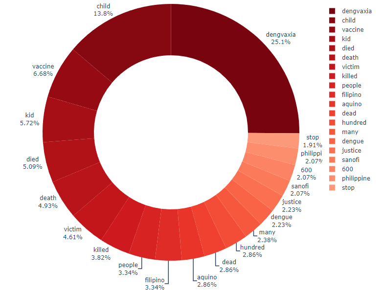

A question to tackle, then, is how tweets will be grouped together based on their topics.
Recall that in the previous step of visualization, we successfully created a visual graph
to identify the most frequent words mentioned across all 150 gathered tweets. Let us take
a look at the graph again:

From here, we considered the significant keywords and grouped them together to form
different topics. The topics, and their keywords, are as follows:
Children:
This is arguably the most prominent topic of the Dengvaxia misinformation
tweets, and which the hypothesis also revolves around.
Keywords 'child' and 'kid'.
Politics
Politics is also said to be the reason why Dengvaxia scandal happened based on the tweets.
Keyword 'aquino'.
Sanofi:
Sanofi Pasteur Inc. is the pharmaceutical company who made Dengvaxia vaccines.
Keyword 'sanofi'.
Vaccine:
Another angle to examine is the vaccine hesistancy of Filipinos before, during, and after
this nationwide issue, and so this topic is particularly important.
Keyword 'vaccine'.
Death (regardless of age):
This is to ensure that we also examine the difference between the engagements of tweets about
children's death and tweets about death in general, regardless if the victim is an adult or a child.
Keywords 'death', 'victim', 'killed', 'dead', and 'died'
In the research problem, we are primarily concerned with the number of engagements (likes, replies,
and retweets) of the tweets, and whether there are distinct differences of distribution between these
numbers depending on the content (topic) of the tweets.
First, it is essential to examine the key features of our data.
Independence
During the gathering of disinformation tweets, we did not consider the number of engagements the tweet
has gotten whether we would include it in our dataset or not. Once a tweet was analyzed to be a
disinformation tweet about Dengvaxia, then it was immediately added to the dataset.
Therefore, the observations, i.e. features including engagements, are independent of each other.
Normality
We saw during the preprocessing step that the number of likes, replies, and retweets do not follow the normal
distribution. Instead, they are all skewed to the left.
Therefore, the number of likes, replies, and retweets follow a non-normal distribution.
Homogeneity of Variances
This feature means that the sample data come from a population with the same variance. With this, we
shall perform a test.
Here, we are choosing the Levene's Test for Equal Variances. The test allows us to test the null hypothesis
that a given input of samples are from populations with equal variances. The alternative hypothesis is that
the samples do not come from populations with equal variances. Unlike other variance test, e.g. Barlett's
test, Levene's test is more suited for samples from significantly non-normal populations, which is the case
for this data.
## Levene's Test
from scipy.stats import levene
# dengvaxia_likes = [int(i) for i in dengvaxia_data["Likes"].tolist()]
# dengvaxia_retweets = [int(i) for i in dengvaxia_data["Retweets"].tolist()]
# dengvaxia_replies = [int(i) for i in dengvaxia_data["Replies"].tolist()]
dengvaxia_likes = dengvaxia_data["Likes"].tolist()
dengvaxia_retweets = dengvaxia_data["Retweets"].tolist()
dengvaxia_replies = dengvaxia_data["Replies"].tolist()
if levene(dengvaxia_likes, dengvaxia_retweets, dengvaxia_replies)[1] < 0.05:
print('Reject the null hypothesis of equal variance between groups.')
print(f'P-value is {levene(dengvaxia_likes, dengvaxia_retweets, dengvaxia_replies)[1]}.')
else:
print('Fail to reject the null hypothesis of equal variance between groups.')
print(f'P-value is {levene(dengvaxia_likes, dengvaxia_retweets, dengvaxia_replies)[1]}.')
Fail to reject the null hypothesis of equal variance between groups.
P-value is 0.9585784653296681.
Hence, the number of likes, retweets, and replies of all tweets in the dataset have unequal variances.
The features above are actually the assumptions when using parametric statistical test. Because our data do
not follow the assumption of normality and homogeneity of variances, parametric tests are already out of the
picture when choosing for the appropriate statistical test.
Because we're essentially looking for the statistical difference between the distribution of different engagements
of multiple different topics or groups, the first statistical test to consider is the MANOVA (multivariate analysis
of variance) test. MANOVA is used to determine whether or not there is a statistically significant difference
between the means of three or more independent groups, where we have two or more response variables.
In our case, the independent groups are the five different topics of tweets, mentioned above, and the response
variables are the three engagement values: likes, retweets, and replies. Still, MANOVA is a parametric test and so
we cannot use it in this dataset.
What we can do, however, is instead of executing a single MANOVA test, we divide it into multiple tests for each
response variable (where ANOVA can be used). Since ANOVA is not an option, we instead perform its non-parametric
alternative, called Kruskal-Wallis Test.
Kruskal-Wallis Test
As mentioned, Kruskal-Wallis is the non-parametric equivalent of ANOVA.
Since it's a non-parametric test, Kruskal-Wallis test does not assume a normal distribution. Instead, it assumes
that each group's distribution is identically shaped and scaled. We already saw that the data for likes, retweets,
and replies are identically skewed to the left.
The null hypothesis for this test is that there is no difference in the median values of the groups. As with any
statisical test, if the p-value is larger than the significance level or alpha, the null hypothesis is retained,
otherwise it is rejected.
In Python, it returns the result of H-statistic and the p-value. Note that disproving the null hypothesis does not
reveal how the groups differ, and post hoc comparisons may be required.
Thus, the final process would be:
Group the tweets into the five aforementioned topics using keyword filtering.
Create five lists of number of likes, for each different topics.
Repeat step 2 for creating five lists for retweets.
Repeat step 2 for creating five lists for replies.
Do a Kruskal-Wallis Test for the number of likes of the five topics.
Do a Kruskal-Wallis Test for the number of retweets of the five topics.
Do a Kruskal-Wallis Test for the number of replies of the five topics.
The following blocks of code were used to generate the tweet groupings:
# These are the tweets that contain the keywords "child" and "kid".
remove_indices = [0, 1, 2, 3, 4, 5, 9, 10, 11, 12, 13, 14, 15, 16, 17, 18, 19]
children = dengvaxia_data[dengvaxia_data['Tweet'].str.contains("child|kid")==True]
children = children.drop(children.columns[remove_indices], axis = 1)
children.insert(loc = 0, column = "Topic", value = "children")
children_likes = children["Likes"].tolist()
children_replies = children["Replies"].tolist()
children_retweets = children["Retweets"].tolist()
# These are the tweets that contain the keyword "aquino".
politics = dengvaxia_data[dengvaxia_data['Tweet'].str.contains("aquino")==True]
politics = politics.drop(politics.columns[remove_indices], axis = 1)
politics.insert(loc = 0, column = "Topic", value = "politics")
politics_likes = politics["Likes"].tolist()
politics_replies = politics["Replies"].tolist()
politics_retweets = politics["Retweets"].tolist()
# These are the tweets that contain the keyword "sanofi".
# Sanofi Pasteur Inc. is the pharmaceutical company who made Dengvaxia vaccines.
sanofi = dengvaxia_data[dengvaxia_data['Tweet'].str.contains("sanofi")==True]
sanofi = sanofi.drop(sanofi.columns[remove_indices], axis = 1)
sanofi.insert(loc = 0, column = "Topic", value = "sanofi")
sanofi_likes = sanofi["Likes"].tolist()
sanofi_replies = sanofi["Replies"].tolist()
sanofi_retweets = sanofi["Retweets"].tolist()
# These are the tweets that contain the keyword "vaccine".
vaccine = dengvaxia_data[dengvaxia_data['Tweet'].str.contains("vaccine")==True]
vaccine = vaccine.drop(vaccine.columns[remove_indices], axis = 1)
vaccine.insert(loc = 0, column = "Topic", value = "vaccine")
vaccine_likes = vaccine["Likes"].tolist()
vaccine_replies = vaccine["Replies"].tolist()
vaccine_retweets = vaccine["Retweets"].tolist()
# These are the tweets that contain the keywords "death", "victim", "killed", "dead", and "died".
death = dengvaxia_data[dengvaxia_data['Tweet'].str.contains("death|victim|killed|dead|died")==True]
death = death.drop(death.columns[remove_indices], axis = 1)
death.insert(loc = 0, column = "Topic", value = "death")
death_likes = death["Likes"].tolist()
death_replies = death["Replies"].tolist()
death_retweets = death["Retweets"].tolist()
The implementation and results of the Kruskal-Wallis tests for each engagement type can be seen below.
# Likes
from scipy import stats
likes_result = stats.kruskal(children_likes, politics_likes, sanofi_likes, vaccine_likes, death_likes)[1]
if likes_result < 0.05:
print('Reject the null hypothesis. There is a significant difference in likes between different topics.')
else:
print('Retain the null hypothesis. There are no significant difference in likes between different topics.')
print(f'P-value is {likes_result}.')
Retain the null hypothesis. There are no significant difference in likes between different topics.
P-value is 0.21353072371928566.
# Retweets
from scipy import stats
retweets_result = stats.kruskal(children_retweets, politics_retweets, sanofi_retweets, vaccine_retweets, death_retweets)[1]
if retweets_result < 0.05:
print('Reject the null hypothesis. There is a significant difference in retweets between different topics.')
else:
print('Retain the null hypothesis. There are no significant difference in retweets between different topics.')
print(f'P-value is {retweets_result}.')
Retain the null hypothesis. There are no significant difference in retweets between different topics.
P-value is 0.5382366090537352.
# Replies
from scipy import stats
replies_result = stats.kruskal(children_replies, politics_replies, sanofi_replies, vaccine_replies, death_replies)[1]
if replies_result < 0.05:
print('Reject the null hypothesis. There is a significant difference in replies between different topics.')
else:
print('Retain the null hypothesis. There are no significant difference in replies between different topics.')
print(f'P-value is {replies_result}.')
Retain the null hypothesis. There are no significant difference in replies between different topics.
P-value is 0.9181043703132528.
By Kruskal-Wallis Test, we can see that there are no significant difference in any measure of engagement,
i.e. likes, retweets, replies, between different topics. Thus, we cannot prove our hypothesis that "Tweets
about children's deaths resulted in a higher average amount of engagement based on the tweet topic."
Hence, we will not perform any post hoc comparisons as there are no difference in independent groups between
these outcome variables in the first place.
Since the hypothesis deals with comparing different content in tweets, the chosen model to use is Topic Clustering
using Latent Dirichlet Allocation (LDA). Since the model is used to find specific topics in the data, it is innately
an unsupervised model which means it will learn the structure and relationships in the data by itself then uses
this model to create an output. The output of LDA is the tweets clustered by the model into the specified number
of topics.
Latent Dirichlet Allocation works by first looking at how many topics the data will be grouped to. The process then
starts with assigning each token of all tweets a random topic number based on the number of topics specified.
Afterwards, the iterative part of the model starts when the model looks at which topic each tweet belongs to based
on these values and combines this with how much the topic associates with each token in the tweet. From this
combination, the model decides if the tweet changes which topic it belongs to. Depending on the assessment of the
model, values of each token in the tweet will be adjusted to move them closer to a certain topic number. After these
adjustments, a new iteration is started.
For every iteration, the model will group tweets with similar content closer to each other while separating it
from other tweet content. At the end of the process, the model is expected to have grouped the tweets into its separate
topics.
Since the data does not have to be lemmatized, the data is taken from an earlier stage of preprocessing. Only the tweets
column is necessary for the machine learning portion. The tweets are then formatted using the CountVectorizer class. This
class tokenizes the tweets and also provides the occurrences of each token in the tweet and outputs a sparse matrix.
This will be used as the input for the model.
import pandas as pd
from sklearn.feature_extraction.text import CountVectorizer
path = "Preprocessed Dengvaxia Data.csv"
dengvaxia_data = pd.read_csv(path, header=0)
tweets = dengvaxia_data['Tweet'].copy()
vectorizer = CountVectorizer()
X = vectorizer.fit_transform(tweets)
X
<150x1173 sparse matrix of type '<class 'numpy.int64'>'
with 2380 stored elements in Compressed Sparse Row format>
The data is fit into the LDA class from scikit-learn. After testing different numbers of components or topics
to divide the tweets into, the best determined number of components is 5. The number of iterations is set to 50 since
having more iterations usually means getting a more accurate result.
from sklearn.decomposition import LatentDirichletAllocation
lda = LatentDirichletAllocation(n_components=5, max_iter=50, random_state=123)
lda.fit(X)
To visualize the clusters generated, the output of the model was graphed by plotting the 10 most frequently
used words for each topic cluster. This allows us to see which content are in each cluster is, and the
frequency of key words from the tweets.
# Used the example in the documentation in https://scikit-learn.org/stable/auto_examples/applications/plot_topics_extraction_with_nmf_lda.html#sphx-glr-auto-examples-applications-plot-topics-extraction-with-nmf-lda-py
import matplotlib.pyplot as plt
# Function to plot top words of each topic cluster
def plot_top_words(model, feature_names, n_top_words, title):
fig, axes = plt.subplots(2, 3, figsize=(15, 20), sharex=True)
axes = axes.flatten()
for topic_idx, topic in enumerate(model.components_):
top_features_ind = topic.argsort()[: -n_top_words - 1 : -1]
top_features = [feature_names[i] for i in top_features_ind]
weights = topic[top_features_ind]
ax = axes[topic_idx]
ax.barh(top_features, weights, height=0.7)
ax.set_title(f"Topic {topic_idx +1}", fontdict={"fontsize": 30})
ax.invert_yaxis()
ax.tick_params(axis="both", which="major", labelsize=20)
for i in "top right left".split():
ax.spines[i].set_visible(False)
fig.suptitle(title, fontsize=40)
plt.subplots_adjust(top=0.90, bottom=0.05, wspace=0.90, hspace=0.3)
plt.show()
# Plotting the top 10 words
words = vectorizer.get_feature_names_out()
plot_top_words(lda, words, 10, "Top 10 words from the 5 topic clusters")
Displayed above is the output of the model. The graphs show 5 different clusters, each with their
own set of frequently used words. The model was able to separate the tweets into 5 different topics
since the top frequent words from each cluster are mostly unique among all the topics. Therefore, the
model is valid and can be used for further interpretation.
The graphs can best be interpreted by looking at the words at similar levels from top to bottom. Across
all 5 topic clusters, most common word is 'dengvaxia'. Since all the tweets in the data contain the word
"dengvaxia", this essentially shows the proportion of tweets that each cluster has. The next four rows
show one unifying concept which is 'child deaths'. This means that most of the tweets gathered have content
on child deaths alongside other content as well.
The rest of the rows show the words that make each topic cluster unique. Topic 1 involves seeking justice
for the children who received the dengue vaccine. Topic 2 has the highest number of tweets, and the 4 most
common words aside from 'dengvaxia' are variations of 'child' and 'death'. This topic focuses particularly
on the deaths of the children that were vaccinated with dengvaxia. Topic 3 has the least number of tweets,
and some of the common words have no substantial meaning such as "dont", "another" and "would". The notable words
in this topic are "controversy" and "yellow".
Topic 4 has the second least number of tweets, and the content of these tweets are historical events that
happened in the Philippines. Examples of these are "saf44", "noynoy", "sanofi", and "yolanda". The strange
part about this is that all these events were grouped together into 1 cluster. The reason for this can be
because some tweets in the dataset mention several of these events in a single tweet. On the other hand,
The main content of topic 5 is 'aquino' being the sixth most common word in the cluster.
The greatest conclusion that can be drawn from these graphs is that majority of the dengvaxia misinformation
tweets involved the deaths of children due to dengvaxia. Despite being clustered into 5 topics, the top 4 most
common words in these clusters still revolve around child deaths due to taking the dengvaxia vaccine. This strongly
implies that the content in tweets
Another conclusion from the graphs is that dengvaxia misinformation frequently involved being mentioned
alongside other political issues. Topic 4 had many of these issues stated, and the name of former president
Noynoy Aquino appeared in 4 out of the 5 clusters formed.
We'd like to hear from you.
You can add more information about the team members here.